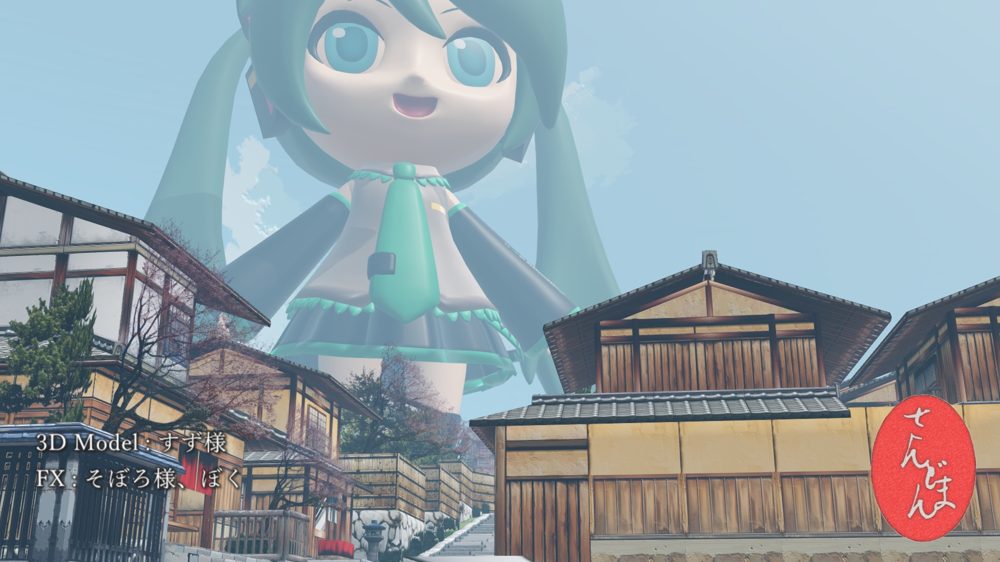
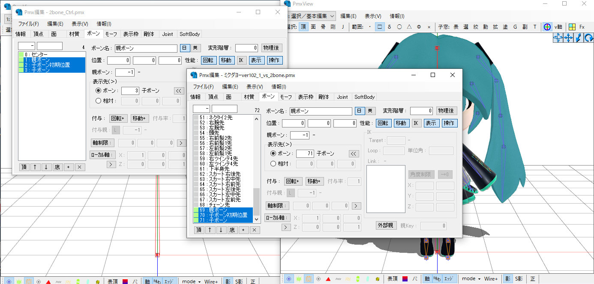
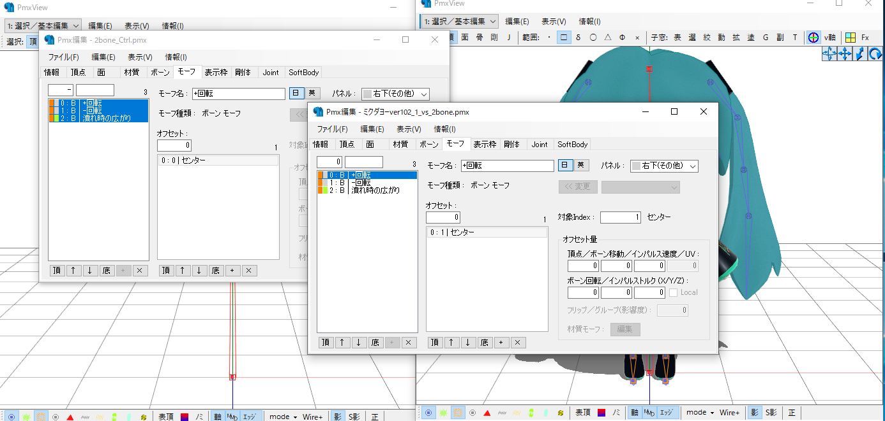
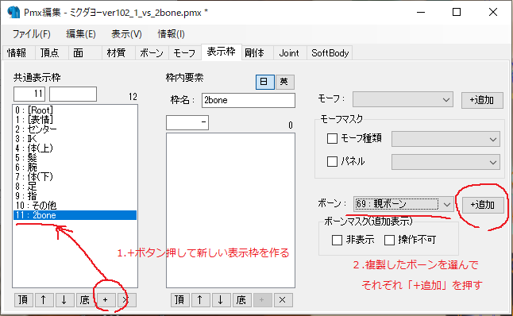
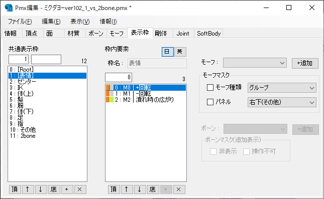

画像を表示するために、GPUはとても良く働いています。GPUの中で働いているプログラムの事をシェーダといい、これを書いている時点でMMDが採用しているDirectX9ではVertexShader, PixelShaderの2種類のシェーダによって物体が画面に表示されるようになります。
PMD,PMXといったファイルに入っているモデルを構成するポリゴンの位置や形を示す情報をメッシュといい、メッシュをモデルのポーズやカメラの位置といった三次元の情報を元に、画面上の位置という二次元の情報に変換する作業をVertexShaderが行います。VertexShaderの仕事は塗り絵の線画を作るまでの作業です。
VertexShaderがメッシュを画面上の情報として塗りつぶせるような形に変換したら、PixelShaderがテクスチャやマテリアルの情報を見ながら塗りつぶしていくわけです。
ちなみにCPUは何をやっているのかと言うと、GPUに渡せるようにデータを加工する部分をやっているわけです。メッシュのデータはこれを使ってね、ポーズはこう、カメラはどっちを向いてますよ、という情報を毎フレームGPUに渡しています。GPUで動いているプログラムを差し替え可能にする仕組みがMMEでして、MMEが無かった頃のMMDは、GPU側で動いているシェーダは樋口M氏の作られた標準の物から替えられなかったのです。
このように、CPUとGPUで仕事が切り分けられているおかげで、GPUは「なんか分からんけどモデルの情報やらカメラの位置やらが送られてくるからそれを元に画面を作ればヨシ！」となり、CPUは「何やってるのか分からんけどGPUにデータを送れば画面作ってくれるからヨシ！」となるわけです。sdPBRは舞力介入P氏の作って下さったMMEの力を借りてGPU側のプログラムを差し替え、MMDの標準シェーダを使った場合とは異なる絵を画面に出しているわけです。
sdPBRでは、従来まではPixelShaderにまつわる部分をマテリアルを介していじる、という事だけやっていました。それ以外の部分は普通にモデルデータ・モーションデータに書いてある通りの座標にモデルが配置され、カメラに書いてある通りの場所から眺めたような位置に投影されて、大人しく塗りつぶされるのを待っていたのです。つまり、VertexShaderの関わる部分はデフォルトのまま一切いじれませんでした。
一方、Version2.50から、VertexShaderを活用したエフェクトも作れるようになりました。より詳しく言うと、VerexShaderへの入力を前処理する関数を定義できるようになりました。本来VertexShaderに入るはずだった情報を横から覗き見して、書き換えて、さも元から処理すべきだったデータであるかのように入れ替えます。例えば、全部の座標の数値を10倍すれば、モデルの大きさを10倍にして表示できます。このようにしてVertexShaderを使ったエフェクトを実装できるようになったのです。VertexShaderの動作を完全に書き換えるような事は出来ません。それをやるためにはsdPBR用に作られた既存のVertexShader用のコードを矛盾が無いように全て書き換える必要が有るからです。
Version3.40時点では以下の2つのエフェクトを実装しています。
scaleエフェクトは針金P氏作scale.fxと同じアイディアに基づいており、fractureエフェクトは、わたり氏作 連続面毎に分解エフェクトを(勝手に)移植させていただきました。どちらもrui氏作のray-mmdへiori_komatsu氏が移植された例を見て着手しました。
2boneエフェクトはテンパカ氏作2ボーンエフェクトを(勝手に)移植させていただきました。
皆さまには本当に感謝しております。
VertexShaderエフェクトはアクセサリ(*.x)に使う事ができません。必ず*.pmdまたは*.pmxファイルで作られているモデルに適用するようにしてください
まず、拡大・縮小させたいモデルの入っているフォルダをエクスプローラで開きましょう。
モデルをコピペして、増やしたファイルの名前の末尾(拡張子より手前)を_vs_scaleとします。MMDに付属のあにまさ式初音ミクさんを収めた初音ミク.pmdだったら初音ミク_vs_scale.pmdになります
※モデルのデータファイルを破損しないようにデータの入っているフォルダごとコピーしたりバックアップを取ったりなどデータ保護についての工夫は各人でなされていると思いますから、それについてはここでは述べません。配布終了になった貴重なモデルデータを損ったりする事のないよう、くれぐれも注意してくださいね。
sdPBRのセットアップの済んでいるpmmに、先ほどのモデルをドロップし、MMEffect－エフェクト割り当てダイアログのMainタブでモデルにvs_material_scaleフォルダの下に入っているマテリアルを割り当てます。ちょっと面倒なんですけど、マテリアルはscaleエフェクト専用のファイルを割り当てる必要が有ります。
vs/scale/sdPBRScaleController.pmxをドロップすると、打ち出の小槌というモデルがモデル一覧に出ます
表情操作パネルで打ち出の小槌の大きくなーれ/小さくなーれモーフを操作するとモデルが大きくなったり小さくなったりします。大きくなーれモーフの値を0.1増やすごとに2倍、4倍…と大きくなり、1.0の時1024倍になります。小さくなーれモーフは0.1増やすごとに1/2倍になり、1.0の時1024分の1になります。

すず式ミクダヨーさんは、すず様より、清水風ステージはムムム様より、お借りしました
エフェクト－スケール原点ボーンを操作すると拡大・縮小の基準点を制御できます。モデルの全ての親などの中心になるボーンを、このボーンの外部親として登録すると良いでしょう
モデルの方にPMXエディタなどで以下のモーフ・ボーンを追加するとsdPBRScaleController.pmxが無い場合に、モデルに割り当てられたボーン・モーフのパラメータを参照するようになるため、個々のモデルで拡大率などを変えられます
わたり氏作連続面毎に分解エフェクトに同梱の、どるる氏作連続面毎に重心書き込みプラグイン(PMXEditor用)が別途必要になりますので、用意してください。また、PMXEditorでの作業も必要になりますので、極北P氏作 PMXEditorもインストールしておきましょう。
連続面毎に分解エフェクトの配布先はこちらからどうぞ
PMXEditorの配布先はこちらですが、まだインストールすらしていないという場合はすぐにこのエフェクトをいきなり使おうとするのではなく、まずはPMXEditorの使い方自体に慣れてからじっくりやってください。ネットの広大な海にはPMXEditorのインストール方法などのノウハウが篤志ある方々によって一杯公開されていますから、ちょっといじってみて分からないからと言って何でもすぐに作者に直接聞くのだけはやめてください。個人の限られた合間の時間で開発されているのはPMXEditorもsdPBRもMMD本体も同じ事ですし、ノウハウを共有してくださっている有志の方々にも失礼です。
さて、用意できたところで、分解したいモデルの入っているフォルダをエクスプローラで開きましょう。ところで、モデルの印象を大きく変えたり、損壊するような表現を禁ずる、という規約の元に配布されているモデルも有りますから、その辺りはちゃんと確認してください。
モデルをコピーして、ファイル名の末尾(拡張子より手前)を_vs_fractureとします。
PMXEditorを起動して、連続面毎に重心書き込みプラグインを用いて、分解したいモデルに重心情報を書き込みます(時間が掛かるかもしれません)
sdPBRのセットアップの済んでいるpmmに、先ほどのモデルをドロップします
MMEffect－エフェクト割り当てダイアログのMainタブでモデルにvs_material_fractureフォルダの下に入っているマテリアルを割り当てます
モデルに対して、連続面毎に分解エフェクトに同梱のサンプルモーション.vmdを読み込みます。
再生終了フレームを適宜設定したら再生ボタンを押して、分解されるかチェックします。
セットアップ後の使い方自体は連続面毎に分解エフェクトとほぼ同様なので、先に挙げた連続面毎に分解エフェクトの紹介動画をよく見れば使い方が詳しく分かると思います。
Version 3.40よりテンパカ氏作、2boneエフェクト相当の変形をsdPBRから利用できるように移植しました。こちらは制御用のボーン・モーフをモデルに埋め込む必要が有るので、pmxエディタでモデルを改造する必要が有ります。fractureエフェクトではプラグインで一括してやってくれましたけど、こちらは手動でやることになります。手順自体は大して難しくありませんが、テンパカ氏作2boneエフェクトを別途入手しておく必要が有りますので、こちらよりダウンロードしておいてください。
まず、変形させたいモデルの入っているフォルダをエクスプローラで開きましょう。
モデルをコピペして、増やしたファイルの名前の末尾(拡張子より手前)を_vs_2boneとします。MMDに付属のあにまさ式初音ミクさんを収めた初音ミク.pmdだったら初音ミク_vs_2bone.pmdになります
※繰り返しになりますが、モデルのデータファイルを破損しないようにデータの入っているフォルダごとコピーしたりバックアップを取ったりなどデータ保護についての工夫は各人でなされていると思いますから、それについてはここでは述べません。配布終了になった貴重なモデルデータを損ったりする事のないよう、くれぐれも注意してくださいね。
そうしたら、モデルに変形制御用のボーンとモーフをコピペして埋め込みます。モデルのpmxファイルをPMXeditorで開き、さらにコピペ元としてテンパカ氏作、2boneエフェクトに同梱の2bone_Ctrl.pmxが必要になりますので、それをPMXeditorで開きます。手順は以下に示す画像の通りです。

1.2bone_Ctrl.pmxから、親ボーン・子ボーン初期位置・子ボーンの3つのボーンをモデルにコピペします。モデルのサイズにあわせて各ボーンの位置を調整すると使いやすくなると思います。全ての親(無ければセンターなど)を親ボーンの親ボーン(変な言い方…)にすると良いでしょう。コピペによって3つのボーンの間の親子関係は保たれますが、手作業で親ボーンの親ボーンだけ設定する必要が有ります。

2.同様に2bone_Ctrl.pmxから、+回転・-回転・潰れ時の広がりの3つのモーフをモデルにコピペします。

3.ボーンの表示枠を設定をします。左下の+ボタンを押して新しい表示枠を作り、分かりやすい名前を付けます。この例では2boneと名づけました。そして、右下付近のドロップダウンリストでコピペしたボーンを選び、+追加ボタンを押してください。これを3つの増やしたボーンについて行ってください。

4.モーフの表示枠も設定をしましょう。左のリストボックスで[表情]を選択したら、右上のモーフドロップダウンリストで+回転・-回転・潰れ時の広がりの3つのモーフをそれぞれ選択し、+追加ボタンを押して追加します。
以上でモデルの改造は完了です。
scale,fracture同様、マテリアルに2boneエフェクト専用のマテリアルファイルを割り当てる必要が有ります。vs_material_2boneフォルダの下のマテリアルを、改造したモデルにMMEffect-Mainタブで割り当ててください。あとは先ほど増やしたボーン・モーフをいじるとモデルが変形します。いじり方については2boneエフェクトのマニュアルを参照してください。
先に述べたように、VertexShaderエフェクトを適用したモデルには、使いたいVertexShaderエフェクトに対応したマテリアルを割り当てる必要が有ります。ご自身で作られたマテリアルをscaleやfractureに対応させるにはどうするかというと、これはとても簡単でして、例えばfractureエフェクトに対応させたい場合は
#include "../../vs/fracture/material.fxsub"
という行を#include "../../shader/sdPBRMaterialTail.fxsub"という最後の方に書かれている行よりも手前に書くだけでOKです。
例えば、マテリアル作成法の最初に出てくるkintama.fxのscale対応版であれば以下のようになります
#define SDPBR_MATERIAL_VER 100
#include "../../shader/sdPBRMaterialHead.fxsub"
void SetMaterialParam(inout Material m, float3 n,float3 l, float3 Eye, float2 uv)
{
m.metallic = 1;
m.baseColor = float3(1.00,0.77,0.34);
m.roughness = 0.5;
}
#include "../../vs/scale/material.fxsub"
#include "../../shader/sdPBRMaterialTail.fxsub"
{kind=link}
{kind=link}
{kind=link}
{kind=link}
{kind=link}
{kind=link}
{kind=link}